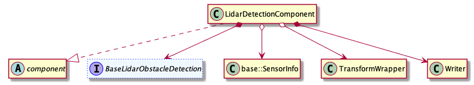
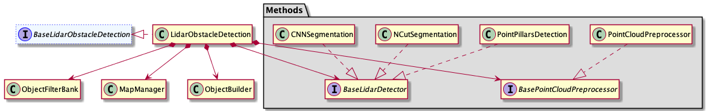

How to add a new lidar detector algorithm
The processing flow of lidar perception module is shown below:

The detector algorithm introduced by this document is located at Detection Component listed below. Current architecture of Detection Component is shown：  
As we can see from above structure, lidar detector algorithm, such as PointPillars, is the derived class of base_lidar_detector which acts as a abstract class member of base_lidar_obstacle_detection located in Detection Component. Next, We will introduce how to add a new lidar detector algorithm.
Apollo has provided two lidar detector algorithms – PointPillars and CNN （NCut will no longer be updated）. Both of them could be easily changed or replaced by other algorithms. The input of algorithm should be original points cloud data, while the output should be obastacle object data. This document will introduce how to add a new lidar detector algorithm, the basic task sequence is listed below：
Define a class that inherits
base_lidar_detectorImplement the class
NewLidarDetectorAdd config and param proto file for
NewLidarDetectorUpdate lidar_obstacle_detection.conf
The steps are elaborated below for better understanding:
Define a class that inherits base_lidar_detector
All the lidar detector algorithms shall inherit base_lidar_detector，which defines a set of interfaces. Here is an example of the detector implementation:
namespace apollo {
namespace perception {
namespace lidar {
class NewLidarDetector : public BaseLidarDetector {
public:
NewLidarDetector();
virtual ~NewLidarDetector() = default;
bool Init(const LidarDetectorInitOptions& options = LidarDetectorInitOptions()) override;
bool Detect(const LidarDetectorOptions& options, LidarFrame* frame) override;
std::string Name() const override;
}; // class NewLidarDetector
} // namespace lidar
} // namespace perception
} // namespace apollo
The function signature of base_lidar_detector is pre-defined：
struct LidarDetectorInitOptions {
std::string sensor_name = "velodyne64";
};
struct LidarDetectorOptions {};
struct LidarFrame {
// point cloud
std::shared_ptr<base::AttributePointCloud<base::PointF>> cloud;
// world point cloud
std::shared_ptr<base::AttributePointCloud<base::PointD>> world_cloud;
// timestamp
double timestamp = 0.0;
// lidar to world pose
Eigen::Affine3d lidar2world_pose = Eigen::Affine3d::Identity();
// lidar to world pose
Eigen::Affine3d novatel2world_pose = Eigen::Affine3d::Identity();
// hdmap struct
std::shared_ptr<base::HdmapStruct> hdmap_struct = nullptr;
// segmented objects
std::vector<std::shared_ptr<base::Object>> segmented_objects;
// tracked objects
std::vector<std::shared_ptr<base::Object>> tracked_objects;
// point cloud roi indices
base::PointIndices roi_indices;
// point cloud non ground indices
base::PointIndices non_ground_indices;
// secondary segmentor indices
base::PointIndices secondary_indices;
// sensor info
base::SensorInfo sensor_info;
// reserve string
std::string reserve;
void Reset();
void FilterPointCloud(base::PointCloud<base::PointF> *filtered_cloud,
const std::vector<uint32_t> &indices);
};
Implement the class NewLidarDetector
To ensure the new detector could function properly, NewLidarDetector should at least override the interface Init(), Detect(), Name() defined in base_lidar_detector. Init() is resposible for config loading, class member initialization, etc. And Detect() will implement the basic logic of algorithm. A concrete NewLidarDetector.cc example is shown：
namespace apollo {
namespace perception {
namespace lidar {
bool NewLidarDetector::Init(const LidarDetectorInitOptions& options) {
/*
Initialization of your detector
*/
}
bool NewLidarDetector::Detect(const LidarDetectorOptions& options, LidarFrame* frame) {
/*
Implementation of your detector
*/
}
std::string NewLidarDetector::Name() const {
/*
Return your detector's name
*/
}
PERCEPTION_REGISTER_LIDARDETECTOR(NewLidarDetector); //register the new detector
} // namespace lidar
} // namespace perception
} // namespace apollo
Add config and param proto file for NewLidarDetector
Follow the following steps to add config and param proto file for the new detector:
Define a
protofor the new detector configurations according to the requirements of your algorithm. As a reference， you can found and follow theprotodefinition ofcnn_segmentationatmodules/perception/lidar/lib/detector/cnn_segmentation/proto/cnnseg_config.protoOnce finishing your
proto, for examplenewlidardetector_config.proto, add the following content:syntax = "proto2"; package apollo.perception.lidar; message NewLidarDetectorConfig { double parameter1 = 1; int32 parameter2 = 2; }
Define a
protofor the new detector parameters according to the requirements of your algorithm. Also, as a reference, you can found and follow theprotodefinition ofcnn_segmentationatmodules/perception/lidar/lib/detector/cnn_segmentation/proto/cnnseg_param.proto. Similarly, add the following content once finished:syntax = "proto2"; package apollo.perception.lidar; //your parameters
Refer to
modules/perception/production/conf/perception/lidar/config_manager.configand add your detector path:model_config_path: "./conf/perception/lidar/modules/newlidardetector_config.config"
Refer to the
modules/cnnseg.configin the same folder and createnewlidardetector.config:model_configs { name: "NewLidarDetector" version: "1.0.0" string_params { name: "root_path" value: "./data/perception/lidar/models/newlidardetector" } }
Refer to
cnnsegand createnewlidardetectorfolder atmodules/perception/production/data/perception/lidar/models/. Add.conffiles for different sensors：Note：The "*.conf" and "*param.conf" file should have the same structure with the "proto" files defined in step 1，2，3.
Update lidar_obstacle_detection.conf
To use your new lidar detector algorithm in Apollo，you need to modify the value of detector to your detector’s name in lidar_obstacle_detection.conf located in corresponding sensor folder in modules/perception/production/data/perception/lidar/models/lidar_obstacle_pipline
Once you finished the above modifications, you new detector should take effect in Apollo.